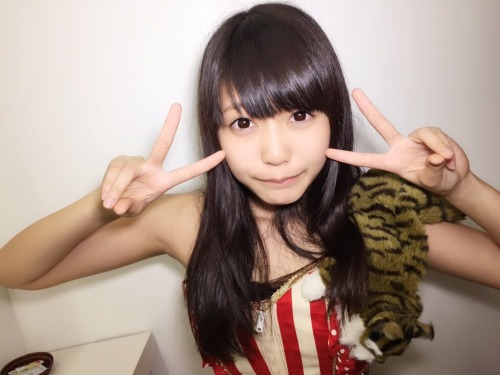
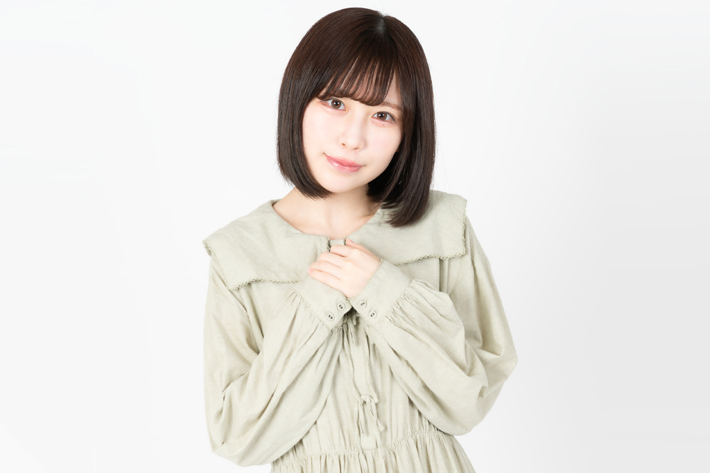
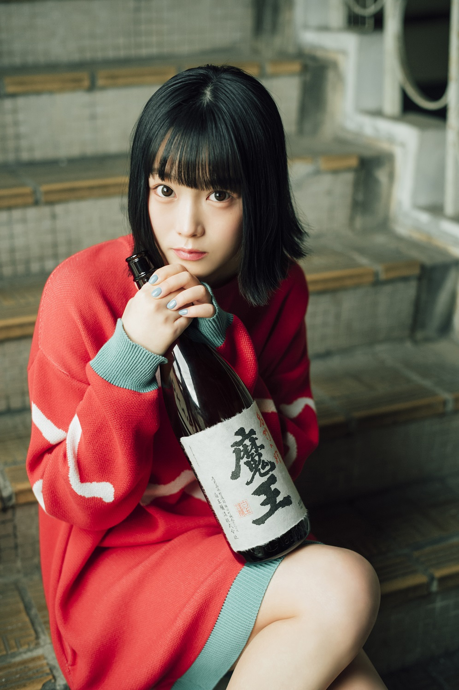
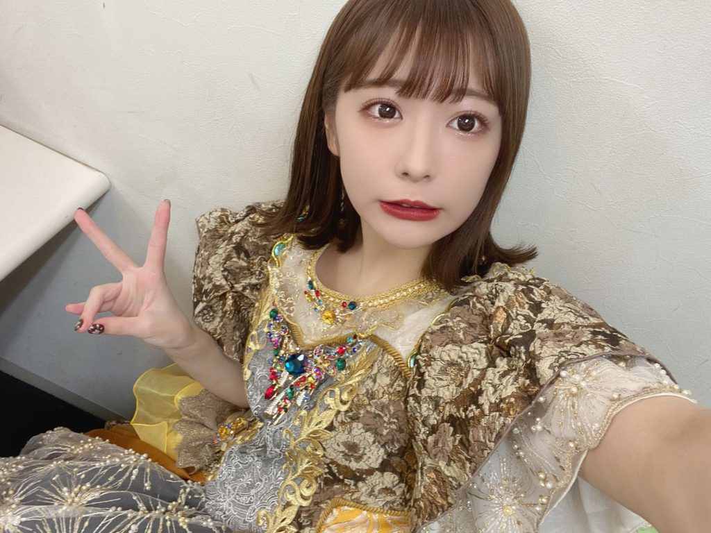
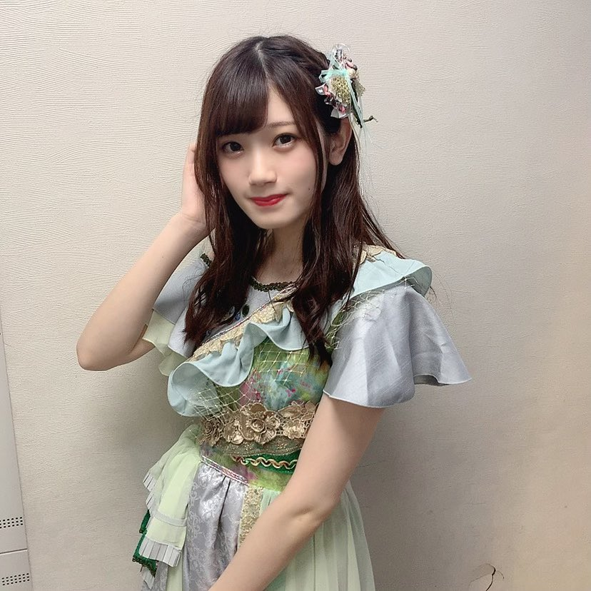

まねきケチャについて
日本武道館公演を開催したまねきケチャは、2015.08.08にデビュー、現在は中川美優、宮内凛、松下玲緒菜、深瀬美桜、篠原葵の5人からなるアイドルグループです。
デビュー時より完全生歌にこだわり、歌唱力の高さと、『顔面偏差値のお化け』とまで称されるハイレベルなルックスにより早くから注目される。
メンバー紹介
松下玲緒奈

まれながらのアイドルと称されるほど、天真爛漫で愛くるしいまねきケチャのセンター、松下玲緒菜。圧倒的な歌唱力を持ち、感情豊かに歌う姿はアイドルファンの多くを虜にする。
集英社『週刊プレイボーイ』では、初グラビアにていきなり表紙・巻頭に抜擢、その勢いのまま、テレビ東京『キングちゃん』のアシスタントMCにも抜擢されるなど、これからの活躍が期待されるザ・アイドル。
2020年5月には彼女の1st写真集『いつまでも』が発売された。
1999年5月2日生まれ、愛知県出身
153cm
属性 ｜ 炎
まねき獣 ｜ 猫
担当カラー ｜ 赤
趣味 ｜ カラオケ/ラーメン食べる事/辛いものを食べる事/映画鑑賞/自炊
好きなもの一覧 ｜ 激辛料理/炭水化物/スープカレー/アロマキャンドル/お香/Wi-Fi
嫌いなもの一覧 ｜きのこ/生もの/虫/おばけ/髪の毛を乾かすこと/日差し/集合体
宮内凛

正統派黒髪色白美少女の宮内凛は、見た目とは裏腹なキレキレのダンスパフォーマンスを誇るパーフェクトガール。
意思が強く、時には真面目すぎると怒られるほどで、熱が40度あってもそれを隠してステージに立つほどのプロ意識の持ち主。
苦労や損を厭わず努力を重ねる姿にメンバー皆が一目置く優等生。
アイドルやＫポップに造詣が深く、現在は韓国語を勉強中。
夢は清涼飲料水のCM出演、漫画誌の表紙、世界ツアー。
1998年5月1日生まれ、栃木県出身
159cm
属性 ｜ 水
まねき獣 ｜ かわうそ
担当カラー ｜ 青
好きな食べ物 ｜ 二郎系ラーメン
趣味 ｜ インスタでラーメンを検索すること/アイドルの応援/グラビアアイドルさんをみること
好きなもの一覧 ｜ アイドル/ラーメン/背脂/激辛/グラビア
嫌いなもの一覧 ｜ パクチー/肉の脂/魚の皮/満員電車
中川美優

大きな瞳と黒髪が特徴的なまねきケチャのリーダー、中川美優の魅力はズバリギャップ。
アニメ声の持ち主。アニメや漫画に造詣が深く、将来的には声優としてのキャリアを希望。
サイボーグと称されるほどステージ上ではクールで感情を爆発させるようなことはないものの、特典会などではとてもフランクでガチ恋とは無縁。
アニメや漫画、ファッション以外にも、サバゲー、ポケモンカード、麻雀、動画編集、お酒など
地球上の食品の８割が食べられないという偏食家な一面もあり、TBS『NEWSな2人』にも現代を代表する偏食家のひとりとして出演。
主食は栗、チョコレート、アイスクリーム。
1995年5月12日生まれ、北海道出身 AB型
162cm
属性 ｜ 闇
まねき獣 ｜ 羊
担当カラー ｜ 紫
好きな食べ物 ｜ アイス/お酒
嫌いな食べ物 ｜ ほとんど
趣味 ｜ ポケモンカード/麻雀/サバゲー/その他ゲーム/動画編集/ピアノ
嫌いなもの ｜ 絶叫/おばけ/炭水化物
好きなもの一覧｜ ポケモン/古着/漫画/アニメ/旅行
深瀬美桜

2017年12月に途中加入した新メンバー深瀬美桜、加入が発表されるや否や『可愛すぎる』『すでにメンバー感』『広瀬すず似』などとバズり、
一夜にしてフォロワーを1万人集めるなど期待の新人。
相当の努力家。
2000年03月30日生まれ、茨城県出身 A型
153cm
属性 ｜ 雷
まねき獣 ｜ コアラ
担当カラー ｜ 黄
好きな食べ物 ｜ 辛いもの/カヌレ/芋/果物
趣味 ｜ 写真を撮ること/買い物/音楽を聴くこと/映画鑑賞/アコースティックギター
好きなもの一覧 ｜ カメラ/香りもの/音楽/洋服
嫌いなもの一覧 ｜ 生もの(少し食べられるもの増えた)/牛乳/茶碗蒸し/椎茸(丸ごと)
篠原葵

2018年12月、待望の新メンバーとしてまねきケチャに加入した篠原葵。透明感溢れる顔立ちとすらりとしたスタイルの良さが魅力。
一件おしとやかでしっかりしている印象であるが、トークイベントでは葵ワールドが広がる発言で、天然が際立つ二面性が楽しめる存在。
まねきケチャの最年少。
2000年07月01日生まれ、愛知県出身 AB型
161cm
属性 ｜ 自然
まねき獣 ｜ ペンギン
担当カラー ｜ 緑
好きな食べ物 ｜ パンケーキ/チーズ/ハンバーグ/タルト/牛タン/アイス
趣味 ｜ 服/ドラマ鑑賞/カフェ巡り
好きなもの一覧 ｜ 犬/ペンギン/シナモン/アピーチ
嫌いなもの一覧 ｜ 虫/きのこ
ここから問題!!
私の推しは誰でしょう
答え
まねきケチャのホームページ
まねきケチャ
以上、まねきケチャでした！